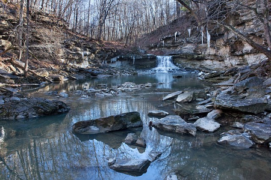
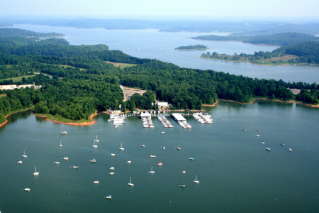

Brown County Park
"I was often forced to hike there as a child. Although at the time I couldn't appreciate the beautiful scenerey and the good exercise as a walk, I look back on those memories with fondness as great time spent with my family." -Alicia
"I once got lost here with my friends. Turns out they weren't very good at reading maps and I wasn't good at multitasking, but they well-paved paths really stood out and helped us figure out our direction. I would get lost here again!" -Abigail
Fort Harrison Park
"I like visiting fort Harrison to see the army base. Also has a nice trail along fall creek." -Christopher
"It’s a nice hike close to the city. Not a lot of hills, and the trees are pretty." -Jennifer

McCormicks Creek Park
"I love spending the day hiking at the creek, and playing in the water." -Jennifer
"I really love seeing the waterfall, the cave, and all the wildlife. Tons of raccoons!" -Christopher
